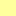

<!doctype html>
<html lang="en">
    <head>
        <meta charset="utf-8">
        <meta http-equiv="X-UA-Compatible" content="IE=edge">
        <meta name="viewport" content="initial-scale=1,user-scalable=no,maximum-scale=1,width=device-width">
        <meta name="mobile-web-app-capable" content="yes">
        <meta name="apple-mobile-web-app-capable" content="yes">
        <link rel="stylesheet" href="css/leaflet.css">
        <link rel="stylesheet" href="css/qgis2web.css">
        <link rel="stylesheet" href="css/L.Control.Window.css" />
		<link rel="stylesheet" href="css/easy-button.css">
        <link rel="stylesheet" href="myStyle.css">
        <style>
        html, body, #map {
            width: 100%;
            height: 100%;
            padding: 0;
            margin: 0;
        }
        </style>
        <title></title>
    </head>
    <body>
        <div id="map">
        </div>
        <script src="js/qgis2web_expressions.js"></script>
        <script src="js/leaflet.js"></script>
        <script src="js/leaflet.rotatedMarker.js"></script>
        <script src="js/leaflet.pattern.js"></script>
        <script src="js/leaflet-hash.js"></script>
        <script src="js/Autolinker.min.js"></script>
        <script src="js/rbush.min.js"></script>
        <script src="js/labelgun.min.js"></script>
        <script src="js/labels.js"></script>
        <script src="js/leaflet.wms.js"></script>
        <script src="data/4mabovegroundlevel_1.js"></script>
        <script src="data/15mabovegroundlevel_2.js"></script>
        <script src="js/Leaflet.Control.Custom.js"></script>
        <script src="js/L.Control.Window.js"></script>
		<script src="https://cdn.jsdelivr.net/npm/leaflet-easybutton@2/src/easy-button.js"></script>
        <script defer src="https://use.fontawesome.com/releases/v5.3.1/js/all.js" integrity="sha384-kW+oWsYx3YpxvjtZjFXqazFpA7UP/MbiY4jvs+RWZo2+N94PFZ36T6TFkc9O3qoB" crossorigin="anonymous"></script>
		<script>
        var map = L.map('map', {
            zoomControl:true, maxZoom:20, minZoom:13,
			center: [51.5556, -0.0792],
			zoom: 15
        });
		
		L.control.scale().addTo(map);
		
        // -------------------------------------------------------------------------------------------------------------
        //basemap

        var hash = new L.Hash(map);
        map.attributionControl.addAttribution('<a href="https://github.com/tomchadwin/qgis2web" target="_blank">qgis2web</a>');
        var bounds_group = new L.featureGroup([]);
        function setBounds() {
        }

        // -------------------------------------------------------------------------------------------------------------
        //basemap ZoomStack

        var overlay_OSZoomStack_0 = L.tileLayer('https://api.mapbox.com/styles/v1/hackneygis/cjk8lmw5r9mlz2sohv2n6xnfq/tiles/256/{z}/{x}/{y}?access_token=pk.eyJ1IjoiaGFja25leWdpcyIsImEiOiJjajh2ZGRiMDMxMzc5MndwbHBmaGtjYTAyIn0.G75YwN8Zgr8gqDJoV8XMFw', {
            opacity: 1.0,
            maxZoom: 17,
        });
        overlay_OSZoomStack_0.addTo(map);

        // -------------------------------------------------------------------------------------------------------------
        //basemap MasterMap

        map.addLayer(overlay_OSZoomStack_0);
        var overlay_OSMM_light_1 = L.WMS.layer("http://lbhgiswebt01/geoserver/wms", "osmm:OSMM_outdoor", {
            format: 'image/png',
            uppercase: true,
            transparent: true,
            continuousWorld : true,
            tiled: true,
            info_format: 'text/html',
            opacity: 1,
            identify: false,
            minZoom: 18,
            maxZoom: 20,
        });

        map.addLayer(overlay_OSMM_light_1);

        // -------------------------------------------------------------------------------------------------------------
        // disclaimer

		var disclaimerContent = "Please confirm that you have read the explanatory text that accompanies these maps. Full details of the modelling undertaken are provided with with CERC\'s Air Quality Assessment of Walford Road Scheme Phase 2 dated 2019.";
		
        var winOpts = L.control.window(map,
            {content: disclaimerContent,
            visible: true,
            position: 'top',
            closeButton: false,
            modal: true,
            prompt: {
                //callback: function(){alert('OK clicked')}, 
                //action: function(){alert('action clicked')},
                //buttonAction: 'action', 
                buttonOK: 'OK',
                //buttonCancel: 'Cancel'
            } 
        });


        // -------------------------------------------------------------------------------------------------------------
         // styles and popups - 4 m above ground level layer

        function pop_4mabovegroundlevel_1(feature, layer) {
            var popupContent = '<table>\
                    <tr>\
                        <td colspan="2">Likely to exceed, Descriptor: ' + (feature.properties['IAQM_OpA'] !== null ? Autolinker.link(String(feature.properties['IAQM_OpA'])) : '') + '</td>\
                    </tr>\
                </table>';
            layer.bindPopup(popupContent, {maxHeight: 400});
        }

        function style_4mabovegroundlevel_1_0(feature) {
            switch(String(feature.properties['IAQM_OpA'])) {
                case 'Slight Adverse':
                    return {
                pane: 'pane_4mabovegroundlevel_1',
                stroke: false, 
                fill: true,
                fillOpacity: 1,
                fillColor: 'rgba(255,255,158,0.8)',
            }
                    break;
                case 'Moderate Adverse':
                    return {
                pane: 'pane_4mabovegroundlevel_1',
                stroke: false, 
                fill: true,
                fillOpacity: 1,
                fillColor: 'rgba(254,206,41,0.8)',
            }
                    break;
                case 'Substantial Adverse':
                    return {
                pane: 'pane_4mabovegroundlevel_1',
                stroke: false, 
                fill: true,
                fillOpacity: 1,
                fillColor: 'rgba(227,90,83,0.8)',
            }
                    break;
            }
        }
        map.createPane('pane_4mabovegroundlevel_1');
        map.getPane('pane_4mabovegroundlevel_1').style.zIndex = 403;
        map.getPane('pane_4mabovegroundlevel_1').style['mix-blend-mode'] = 'normal';
        var layer_4mabovegroundlevel_1 = new L.geoJson(json_4mabovegroundlevel_1, {
            attribution: '<a href=""></a>',
            pane: 'pane_4mabovegroundlevel_1',
            onEachFeature: pop_4mabovegroundlevel_1,
            style: style_4mabovegroundlevel_1_0,
        });
        bounds_group.addLayer(layer_4mabovegroundlevel_1);
        

        // -------------------------------------------------------------------------------------------------------------
        // styles and popups - 1.5 m above ground level layer

        function pop_15mabovegroundlevel_2(feature, layer) {
            var popupContent = '<table>\
                    <tr>\
                        <td colspan="2">Likely to exceed, Descriptor: ' + (feature.properties['IAQM_OpA'] !== null ? Autolinker.link(String(feature.properties['IAQM_OpA'])) : '') + '</td>\
                    </tr>\
                </table>';
            layer.bindPopup(popupContent, {maxHeight: 400});
        }

        function style_15mabovegroundlevel_2_0(feature) {
            switch(String(feature.properties['IAQM_OpA'])) {
                case 'Slight Adverse':
                    return {
                pane: 'pane_15mabovegroundlevel_2',
                stroke: false, 
                fill: true,
                fillOpacity: 1,
                fillColor: 'rgba(255,255,158,0.8)',
            }
                    break;
                case 'Moderate Adverse':
                    return {
                pane: 'pane_15mabovegroundlevel_2',
                stroke: false, 
                fill: true,
                fillOpacity: 1,
                fillColor: 'rgba(254,206,41,0.8)',
            }
                    break;
                case 'Substantial Adverse':
                    return {
                pane: 'pane_15mabovegroundlevel_2',
                stroke: false, 
                fill: true,
                fillOpacity: 1,
                fillColor: 'rgba(227,90,83,0.8)',
            }
                    break;
            }
        }
        map.createPane('pane_15mabovegroundlevel_2');
        map.getPane('pane_15mabovegroundlevel_2').style.zIndex = 404;
        map.getPane('pane_15mabovegroundlevel_2').style['mix-blend-mode'] = 'normal';
        var layer_15mabovegroundlevel_2 = new L.geoJson(json_15mabovegroundlevel_2, {
            attribution: '<a href=""></a>',
            pane: 'pane_15mabovegroundlevel_2',
            onEachFeature: pop_15mabovegroundlevel_2,
            style: style_15mabovegroundlevel_2_0,
        });
        bounds_group.addLayer(layer_15mabovegroundlevel_2);
        map.addLayer(layer_15mabovegroundlevel_2);

		// -------------------------------------------------------------------------------------------------------------
        // legend

       L.control.custom({
            position: 'topright',
            collapsed:true,
            content : '<table cellpadding="0"><tr><td><strong>Focus areas where mitigation is to be considered<br/>based on annual mean nitrogen dioxide (NO<sub>2</sub>).</strong></td><td align="right" valign="top"></td><tr><td colspan="2">Option A - Modeled at two heights</td></tr></table><table><tr><td></td><td>Likely to exceed, Descriptor: Slight Adverse</td></tr><tr><td></td><td>Likely to exceed, Descriptor: Moderate Adverse</td></tr><tr><td></td><td>Likely to exceed, Descriptor: Substantial Adverse</td></tr></table>',
            classes : 'leaflet-control-layers',
            style   :
            {
            margin: '10px',
            padding: '10px 17px 10px 17px'
            }
        })
        .addTo(map);

        // -------------------------------------------------------------------------------------------------------------
        // layer control
		
		var baseMaps = {};
        var layerControl = L.control.layers(baseMaps,{'1.5 m above ground-level<br /><table><tr><td></td></tr></table>': layer_15mabovegroundlevel_2,' 4 m above ground-level<br /><table><tr><td></td></tr></table>': layer_4mabovegroundlevel_1,},{collapsed:false}).addTo(map);
                
        if (L.Browser.mobile = true) {layerControl.options.collapsed = true;}
	
		// -------------------------------------------------------------------------------------------------------------
         // school marker and popup
		
		var colouredIcon = new L.Icon({
			iconUrl: 'markers/marker-icon-black.png',
			shadowUrl: 'markers/marker-shadow.png',
			iconSize: [25, 41],
			iconAnchor: [12, 41],
			popupAnchor: [1, -34],
			shadowSize: [41, 41]
		});

		var marker = L.marker([51.561774, -0.074887], {icon: colouredIcon}).addTo(map);
        //Link to School focus area removed. 
		//marker.bindPopup('See map for<br/><a href="../Schools_NO2_aa/index.html">William Patten school</a>')
		//marker.bindTooltip('William Patten school', {className: 'myToolTip'})
		
		/*
		var marker = L.marker([51.561774, -0.074887], {
		}).addTo(map);
		marker.bindPopup('See map for<br/><a href="wpatten.html">William Patten school</a>')
		marker.bindTooltip('William Patten school')
		*/
		
		// -------------------------------------------------------------------------------------------------------------
       
        //setBounds();

        </script>
    </body>
</html>
